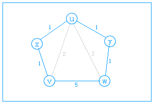

图的最短路径问题是一个比较经典的问题，以下介绍Floyd算法和Dijkstra两个算法解决此问题。
Floyd算法
Floyd算法可用于解决无向图的最短路径问题。弗洛伊德（Floyd）算法过程：
- 用D[v][w]记录每一对顶点的最短距离。
- 依次扫描每一个点，并以其为基点再遍历所有每一对顶点D[][]的值，看看是否可用过该基点让这对顶点间的距离更小。
最短距离有三种情况：
１、两点的直达距离最短。（如下图）
２、两点间只通过一个中间点而距离最短。（图）
３、两点间用通过两各以上的顶点而距离最短。（图）
对于第一种情况：在初始化的时候就已经找出来了且以后也不会更改到。
对于第二种情况：弗洛伊德算法的基本操作就是对于每一对顶点，遍历所有其它顶点，看看可否通过这一个顶点让这对顶点距离更短，也就是遍历了图中所有的三角形（算法中对同一个三角形扫描了九次，原则上只用扫描三次即可，但要加入判断，效率更低）。
对于第三种情况：如下图的五边形，可先找一点（比如x，使=2），就变成了四边形问题，再找一点（比如y,使=2），可变成三角形问题了（v,u,w），也就变成第二种情况了，由此对于n边形也可以一步步转化成四边形三角形问题。（这里面不用担心哪个点要先找哪个点要后找，因为找了任一个点都可以使其变成（n－1）边形的问题）。

以下代码中，可以进行多次测试，每次初始化二维数组，然后输入m对距离，最后输入某两点的参数可以得到两点间的最短距离：
1 2 3 4 5 6 7 8 9 10 11 12 13 14 15 16 17 18 19 20 21 22 23 24 25 26 27 28 29 30 31 32 33 34 35
| #include<iostream> using namespace std; int main() { int n, m; while (cin >> n) { cin >> m; int ma[n][n], a, b, x; for (int i = 0; i < n; ++i) for (int j = 0; j < n; ++j) { ma[i][j] = 999999; if (i == j) ma[i][j] = 0; } while (m--) { cin >> a >> b >> x; if (x < ma[a][b]) ma[a][b] = x; ma[b][a] = ma[a][b]; } for (int i = 0; i < n; ++i) for (int j = 0; j < n; ++j) for (int k = 0; k < n; ++k) { if (ma[j][k] > ma[j][i]+ma[i][k]) ma[j][k] = ma[j][i]+ma[i][k]; } int s, t; cin >> s >> t; if (ma[s][t] == 999999) cout << -1 << endl; else cout << ma[s][t] << endl; } return 0; }
|
Dijkstra算法
Dijkstra算法应用了贪心算法模式，是目前公认的最好的求解最短路径的方法。算法解决的是有向图中单个源点到其他顶点的最短路径问题，其主要特点是每次迭代时选择的下一个顶点是标记点之外距离源点最近的顶点。但由于Dijkstra算法主要计算从源点到其他所有点的最短路径，所以算法的效率较低。
基本原理
设置顶点集合S并不断地作贪心选择来扩充这个集合。一个顶点属于集合S当且仅当从源到该顶点的最短路径长度已知。
初始时，S中仅含有源。设u是G的某一个顶点，把从源到u且中间只经过S中顶点的路称为从源到u的特殊路径，并用数组dist记录当前每个顶点所对应的最短特殊路径长度。Dijkstra算法每次从V-S中取出具有最短特殊路长度的顶点u，将u添加到S中，同时对数组dist作必要的修改。一旦S包含了所有V中顶点，dist就记录了从源到所有其它顶点之间的最短路径长度。
dist[i]储存起点v0到i的最短距离，visited数组标记visited[i]是否被访问过。对于每一次查找，找出相连接的、未被访问过的边长度最短的顶点，设为u，遍历每个顶点k，若v0到k的已记录的距离大于v0通过u到k的距离，则更新dist，dist用这个比较短的距离。
代码
1 2 3 4 5 6 7 8 9 10 11 12 13 14 15 16 17 18 19 20 21 22 23 24 25 26 27 28 29 30 31 32
| void DijkstraPath(int ma[][200], int n, int *dist, int v0, int t) { int i, j, k; bool *visited = new bool[n]; for(i = 0; i < n; i++) { dist[i] = ma[v0][i]; visited[i] = false; dist[v0] = 0; } visited[v0] = true; for(i = 1; i < n; i++) { int min = 999999; int u; for(j = 0; j < n; j++) { if(visited[j] == false && dist[j] < min) { min = dist[j]; u = j; } } visited[u] = true; for(k = 0; k < n; k++) { if(visited[k] == false && min+ma[u][k] < dist[k]) { dist[k] = min+ma[u][k]; } } } if (ma[v0][t] == 999999) cout << "No way between " << v0 << " and " << t << endl; else cout << "The shortest length is " << ma[v0][t] << endl; }
|